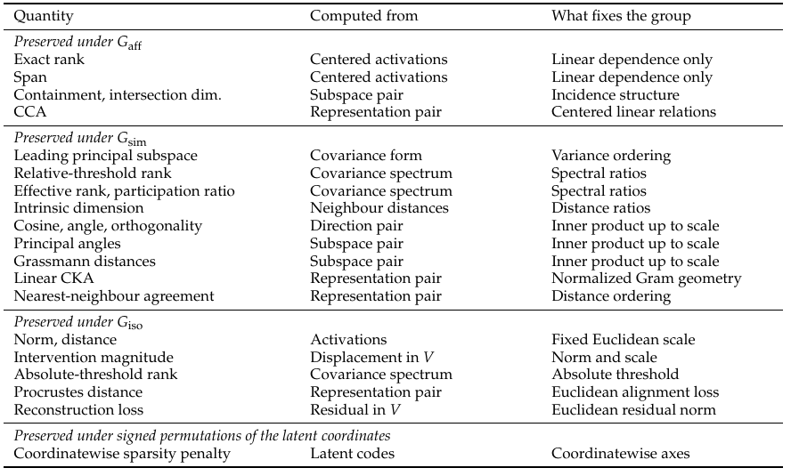

Table 1
The Linear Representation Hypothesis Needs a Group Action
线性表征假说需要群作用
Table 1 汇总常见表征量可保持的最大群：秩、张成空间及 CCA 属于仿射层，角度和归一化谱量属相似层，位移/中心化向量范数与同步运输后的重构误差属等距层。它是定义与对称性审计，不是训练数据的经验图。原作者 Louie Hong Yao、Yuhao Li、Shengchao Liu，CC BY 4.0，来源 https://arxiv.org/pdf/2609.27158v1，PDF \(p\). 7。 原文第4页定义的等距群含平移，第7页原表却将激活绝对范数列为不变量，两者存在不一致；范数不变应指位移或中心化向量，未中心化激活的绝对范数还须固定原点或禁止平移。重构残差也需同步运输重构对象。原表忠实保留，不能把该行解释为含平移时绝对范数不变。